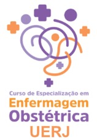

R$ 110,00
Valor para associadas da ABENFO-RJ, já incluindo a anuidade de 2027.
“Enfermagem Obstétrica no Norte Fluminense: desafios e caminhos para a atenção ao parto e Nascimento no SUS”
Em julho de 2026, a ABENFO-RJ promoveu o IX ENEON na UERJ. A partir das reuniões temáticas ocorridas ao longo do evento, nasceu a proposta de levar um encontro no mesmo molde para a região Norte Fluminense, voltado a temas de interesse regional específico. O Ecos do IX ENEON é promovido pela ABENFO-RJ, realizado pelo Curso de Especialização em Enfermagem Obstétrica — CEEO Rede Alyne, Sede UFRJ Macaé, com apoio institucional do Instituto de Enfermagem do Centro Multidisciplinar UFRJ Macaé, organização do projeto de extensão Sobre Viver: Gestação, Parto e Puerpério — da Resistência à Existência e parceria das Secretarias Municipais de Saúde de Macaé, Campos dos Goytacazes, Quissamã e Carapebus.
Por meio de mesas temáticas, palestras e de um Fórum Regional de Discussão, o encontro pretende construir coletivamente proposições que serão sistematizadas na Carta do Norte Fluminense pela Enfermagem Obstétrica e pelos Direitos das Mulheres, documento político a ser apresentado ao final do encontro.
Enfermeiras obstétricas, enfermeiras generalistas, técnicas e auxiliares de enfermagem, médicos, demais profissionais da rede materno-infantil, gestores municipais e estaduais, docentes, estudantes de graduação e pós-graduação, residentes, profissionais da Atenção Primária à Saúde e maternidades, representantes de entidades profissionais e conselhos de saúde. Será estimulada especialmente a participação de gestantes, puérperas, mulheres usuárias do SUS, acompanhantes, doulas, movimentos sociais, coletivos de mulheres e demais integrantes da comunidade.
Inscreva-se no encontro e garanta sua anuidade 2027 automaticamente (pelo valor de 2026).
Valor para associadas da ABENFO-RJ, já incluindo a anuidade de 2027.
Valor para participantes não associadas à ABENFO-RJ.
Pagamento por PIX com envio de comprovante. Dúvidas: abenforio@gmail.com.
Submissões abertas de 1º a 20 de novembro de 2026 (até as 23h59). Até 2 trabalhos como relatora principal, nas áreas de Enfermagem Obstétrica, Neonatal ou Saúde Coletiva. Os trabalhos aprovados concorrem a prêmio por área.
Programação sujeita a ajustes até a abertura das inscrições.
Minicursos (manhã): salas 209B, 303B, 307B e 308B. Sala de apoio: 313B (manhã e tarde). Temas dos minicursos em breve.
Auditório do Bloco D reservado: sexta das 13h às 17h e sábado das 10h30 às 13h.
Todos os horários e atividades · versão para impressão/PDF
Av. Aluízio da Silva Gomes, nº 50 · Granja dos Cavaleiros · Macaé – RJ · CEP 27930-560
Abrir no mapa →A Carta do Norte Fluminense pela Enfermagem Obstétrica e pelos Direitos das Mulheres será construída a partir das discussões realizadas durante o encontro, podendo reunir princípios e proposições relacionados ao fortalecimento e inserção da Enfermagem Obstétrica nos serviços, à valorização das boas práticas, à redução de intervenções obstétricas desnecessárias, à garantia da autonomia e protagonismo das mulheres e à construção de estratégias municipais e regionais para transformação do modelo de atenção.
Após aprovação em plenária, a Carta será encaminhada às Secretarias Municipais de Saúde dos municípios participantes, aos Conselhos Municipais de Saúde, às gestões das maternidades e demais serviços de atenção obstétrica, à Secretaria de Estado de Saúde e às entidades representativas da Enfermagem, além de ser publicada e divulgada pela ABENFO-RJ.
Presidente: Marcele Zveiter
Vice-presidente: Sabrina Seibert
Presidente: Ana Carolina Benevenuto
Vice-presidente: Ana Cláudia Mateus Barreto
Presidente: Carla Shubert
Vice-presidente: Bárbara Barroso
Presidente: Keila Neves
Vice-presidente: Monique Matos
Presidente: Carina Bulcão
Vice-presidente: Ana Eleonora Feydt
Presidente: Glaucimara Riguete
Presidente: Monique Dias
Vice-presidente: Thiago Privado

Apoio institucional: Instituto de Enfermagem do Centro Multidisciplinar UFRJ Macaé · Organização: Projeto de Extensão Sobre Viver: Gestação, Parto e Puerpério — da Resistência à Existência · Parcerias propostas: Secretarias Municipais de Saúde de Macaé, Campos dos Goytacazes, Quissamã e Carapebus.